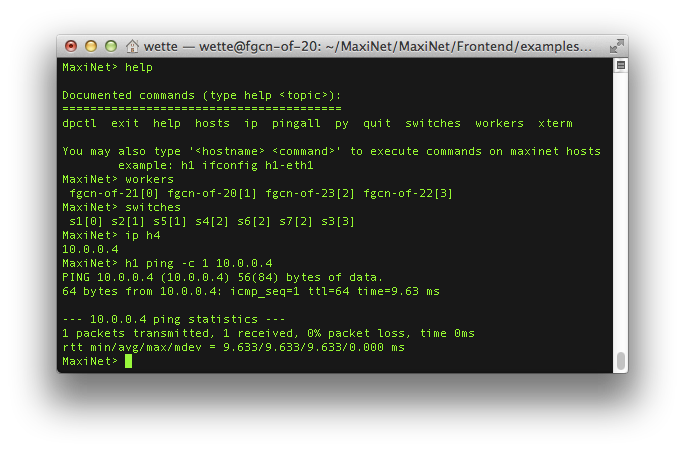
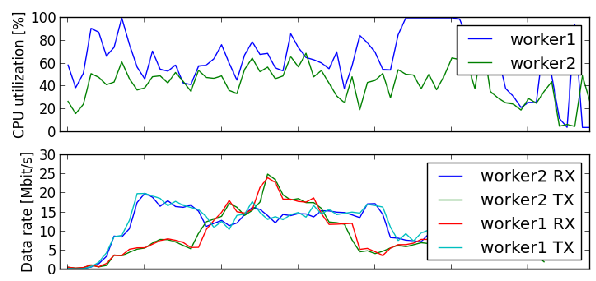

MaxiNet extends the famous Mininet emulation environment to span the emulation across several physical machines. This allows to emulate very large software-defined networks.
MaxiNet runs on a pool of multiple physical machines called Workers. Each of these Workers runs a Mininet emulation and only emulates a part of the whole network. Switches and hosts are interconnected using GRE tunnels across different Workers. MaxiNet provides a centralized API for controlling the emulation. This API is invoked at a specialized Worker called the Frontend. The Frontend partitions and distributes the virtual network onto the Workers and keeps a list of which node resides on which Worker. This way we can access all nodes through the Frontend.
The newest stable release of MaxiNet is Version 1.0.0, released June 2015.
MaxiNet uses Mininet 2.2.1rc1 and has been tested to work with Debian 8.0 and Ubuntu 14.04.
There are two ways to get started using MaxiNet: Using our
preconfigured Virtual Machine Images or
installing from scratch.
For starters, we recommend to use our preconfigured Virtual Machine Images. When performance matters, MaxiNet should definitively be used on non-virtualized machines.
Download these two Virtual Machine images:
[MaxiNet-1.0-rc1.ova] MD5 (MaxiNet-1.0-rc1.ova) = 6dfc4546bd48bc727861b0ad51ecf2ca
The username for both machines is maxinet with the password maxinet.
The file MaxiNet-1.0-rc1.ova contains two virtual machine images: worker1 and worker 2.
You need a program like
Virtual Box to run them on your computer.
Start each virtual machine on a dedicated physical machine and make sure the virtual machines can reach each other.
For testing purposes both virtual machines can also run on the same physical machine.
The virtual machines are using the IP addresses 192.168.0.1 and 192.168.0.2 on the interface eth0. Make sure both machines can reach each other.
To start the emulation process, login into worker1 and cd to /home/maxinet/maxinet/Frontend/examples/
Specify the OpenFlow controller by editing the file /etc/MaxiNet.cfg. You have to change the line
controller = "192.168.0.1:6633" # default controller
to point to the IP address of your OpenFlow controller. Make sure the controller is reachable from both worker1 and worker2.
You can also start a pox controller at worker1 by invoking the commands:
maxinet@worker1:~$ cd pox
maxinet@worker1:~/pox$ screen -d -m -S PoxScr ./pox.py forwarding.l2_learning
Before any MaxiNet expepriment can be executed, you first need to start the MaxiNetFrontendServer and the MaxiNetWorkerServers.
To this end, on worker1, execute the following commands to start both the Frontend and a Worker:
maxinet@worker1:~$ screen -d -m -S MaxiNetFrontend MaxiNetFrontendServer
maxinet@worker1:~$ screen -d -m -S MaxiNetWorker sudo MaxiNetWorker
and on worker2, execute the following to start a second Worker:
maxinet@worker2:~$ sudo screen -d -m -S MaxiNetWorker MaxiNetWorker
Until now, we have a running Frontend server with two connected Workers. You can check the status of the MaxiNet cluster with the command MaxiNetStatus
maxinet@worker2:~$ MaxiNetStatus
MaxiNet Frontend server running at 192.168.0.1
Number of connected workers: 2
--------------------------------
worker1 free
worker2 free
As you can see, the cluster has two workers which are currently not allocated to an experiment.
You can now start the simplePing example as user maxinet.
maxinet@worker1:~/maxinet/Frontend/examples$ python simplePing.py
You can find even more examples under ~/maxinet/Frontend/examples.

The build-in
interactive command line interface (CLI) helps you debugging your experiments. With the CLI, you can execute arbitrary commands at any emulated host.
You can even execute commands directly at the workers. In addition, the CLI lets you check which hosts and switches are emulated at which physical machine.
The CLI supports X forwarding, which means that you can execute grafical user interfaces on both the workers and
the emulated hosts.

MaxiNets
Monitoring functionality automatically logs and evaluates the physical resource usage over the course of your experiments. To this end,
MaxiNet monitors CPU utilization, memory consumption, and network usage of all physical workers. After an experiment has been finished, this data can be plotted and
evaluated to make sure none of the phsical resources was overwhelmed by the experiment.
For an automatic installation of MaxiNet use the installer.sh script.
You can download it here:
[installer.sh]
Just copy the script to each physical machine you want to use MaxiNet on and execute the script as the user you later on want to run MaxiNet with.
Note that the username has to be the same across all installations.
If you are running Ubuntu, you now have to setup your user to use
sudo without password. This can simply be done by adding the following line to your
/etc/sudoers file.
yourusername ALL=(ALL) NOPASSWD: ALL
Replace yourusername with your user name.
The last thing left to do is copy the MaxiNet.cfg to /etc/ and modify it accordingly.
sudo cp ~/MaxiNet/share/MaxiNet-cfg-sample /etc/MaxiNet.cfg
If you do not wish to have the MaxiNet.cfg in /etc/ you can also save it to ~/.MaxiNet.cfg
Edit the config file according to the hints given at
our wiki.
Note that under Ubuntu, you need to set
[all]
...
sshuser = yourusername
usesudo = True
If you want to cite this work, please use this reference:
P. Wette, M. Dräxler, A. Schwabe, F. Wallaschek, M. Hassan Zahraee, H. Karl:
MaxiNet: Distributed Emulation of Software-Defined Networks. In IFIP Networking 2014 Conference (Networking 2014). [
PDF]
If you want to contact us feel free to join our mailing list maxinet@lists.upb.de
You can subscribe to the list at
https://lists.uni-paderborn.de/mailman/listinfo/maxinet
MaxiNet is actively developed by:
- Philip Wette
- Felix Wallaschek
- Arne Schwabe
This work was partially supported by the German Research Foundation (DFG) within the Collaborative Research Centre "On-The-Fly Computing" (SFB 901).
The research leading to these results has received funding from the European Union's Seventh Framework Programme (FP7/2007-2013) under grant agreement no 318115.